Models
| Anneal | Anneal model from Toffoli & Margolis (1988). |
| BandedVegetation | Banded vegetation model based on Dunkerley (1997) Banded vegetation: development under uniform rainfall from a simple cellular automaton model. |
| DaisyWorld | Implementation of a 2D Daisy World model. |
| Excitable | Excitable model from Wiener & Rosenbleuth (1946). |
| Fire | A Model to simulate fire in the forest. |
| Growth | Simple growth model. |
| InterspecificCompetition | Spatial Interspecific Competition using CA. |
| Life | A Model to simulate Game of Life. |
| Oscillator | Oscillator model from Ermentrout & Edelstein-Keshet (1993). |
| Parasit | Parasit model from Hassell et al. |
| Parity | Parity model, by Nigel Gilbert. |
| Snow | Snow falling from the sky. |
| SolidDiffusion | This model describes how diffusion occurs between two adjacent solids. |
| Wolfram | Implements Wolfram's one-dimensional Cellular Automata. |
Anneal
Anneal model from Toffoli & Margolis (1988). Cellular Automata Machines: A New Environment for Modeling. Cambridge, MA. MIT Press.
Parameters
- dim: The x and y dimensions of space.
- finalTime: A number with the final time of the simulation.
BandedVegetation
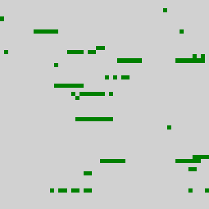
Banded vegetation model based on Dunkerley (1997) Banded vegetation: development under uniform rainfall from a simple cellular automaton model. Plant Ecology 129(2):103-111. This model was implemented by Ana Claudia Rorato, Karina Tosto and Ricardo Dal'Agnol da Silva.
Parameters
- distributeLaterally: Distribute water to lateral neighbors? The default value is true.
- distributeToSecondNeighbors: Distribute water to the neighbors of lateral neighbors? The default value is true. It only works if distributeLaterally is activated.
- dryCoeff: A coefficient beteeen 1.2 and 3.5 to change the state of a cell to dry .
- finalTime: Final simulation tome. The default value is 20.
- plantCover: Initial percentage of plant cover. A number from 0.01 to 1.
- rainDecrease: A boolean value indicating whether the rain decreases after time 10. The default value is true.
- rainfall: Amount of rain in each time step. The default value is 100.
- rainfallPlantSurvival: A value that multiplies dry and wet coefficients. The default value is 100.
- wetCoeff: A coefficient beteeen 0.6 and 1.2 to change the state of a cell to wet.
Output
- plantCoverFinal: The percentage of plant cover in the end of the simulation.
DaisyWorld
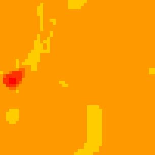
Implementation of a 2D Daisy World model. We have three type of cells: White daisies, Black daisies and soil, with a given albedo for each of them. The cells are placed randomly in the cellular space depending on the given percentage of soil and white daisies, in the remaining there are placed black daisies. Each of them is given with a random initial age, to control the population of daisies, because when they are old (given age) they die. Each cell is also given a random initial value for soil heat between the range of possible values of temperature. Each time step for CA, the temperature will be calculated as follows: Each cell temperature will be calculated according to the daisy albedo and the previous temperature, also the mean neighbours temperature is calculated and this value is used to calculate the mean between the temperature from the cell itself and the mean of the neighbours. If there is an empty cell with a daisy as neighbour, and the conditions for reproduction are fulfilled, a new daisy will be born in the empty cell. The conditions for reproduction are that the daisy's ground has to be inside the range of temperatures, and if it is in the given perfect temperature to reproduce it will have 100 % of chances to reproduce, and less chances the further it is from the perfect temperature. The new born daisy will be the same type as the maximum neighbourhood type (black or white). The daisies will die on a certain (given) age. The first version of this implementation was developed by Nourhan, Shahin and Aida, as final work for Environmental Modeling course in Erasmus Mundus program, Munster University, 2014. It still needs further development.
Parameters
- albedo: A table with white and black albedos.
- dim: The x and y dimensions of space.
- finalTime: The final simulation time.
- lifeSpan: How long does a daisy live?
- proportion: A table with two indexes, empty and white, describing the initial proportions of empty and white cells.
- reproduceTemperature: A table with temperatures related to reproduction.
- temperature: A table with the temperatures: max for maximum temperature, min for minimum temperature, reproduceMin for the minimum temperature that makes the daisies reproductible, reproducePerfect for the temperature daisies will reproduce with a probability of 100%, and reproduceMax for the maximum temperature where daisies can reproduce.
Excitable
Excitable model from Wiener & Rosenbleuth (1946). Arch. Inst. Cardiol. Mexico 16, 202-265. Reffered in Ermentrout & Edelstein-Keshet (1993). Cellular Automata Approaches to Biological Modeling. Jornal of Theoretical Biology, 160, 97-133.
Parameters
- dim: The x and y dimensions of space.
- finalTime: A number with the final time of the simulation.
Fire
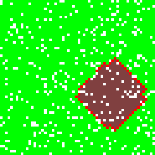
A Model to simulate fire in the forest.
Parameters
- dim: A number with the x and y size of space.
- empty: The percentage of empty cells in the beginning of the simulation. It must be a value between 0 and 1, with default 0.1.
- finalTime: A number with the final simulation time.
Growth
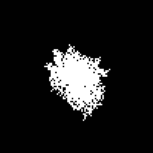
Simple growth model. A given population starts from the center of space and grows randomly.
Parameters
- dim: The x and y dimensions of space.
- finalTime: A number with the final time of the simulation.
- probability: The probability of a cell to become alive once it has an alive neighbor.
InterspecificCompetition
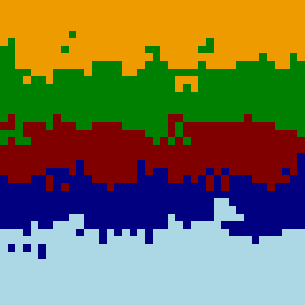
Spatial Interspecific Competition using CA. This model illustrates how species juxtaposition in space can lead to different population dynamics among competitors species. Three Cellular automaton models were constructed to simulate the competitive interaction of five grass species, Agrostis stolonifera, Holcus lanatus, Cynosurus cristatus, Poa trivialis and Lolium perenne, based on experimentally determined rates of invasion. For more information see Cellular Automaton Models of Interspecific Competition for Space The Effect of Pattern on Process. Author(s): Jonathan Silvertown, Senino Holtier, Jeff Johnson and Pam Dale Source: Journal of Ecology, Vol. 80, No. 3 (Sep., 1992), pp. 527-533. This model was implemented by Rolf Simoes, Diogo Amore, and Joao Arthur Pavanelli.
Parameters
- displacements: The displacement of the specied in grid (the paper's models).
- finalTime: The number of simulation steps. The default value is 500.
Life
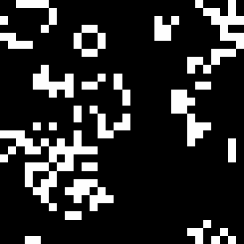
A Model to simulate Game of Life. Look at the "oscillators" and the "spaceships" in http://www.conwaylife.com/wiki/Main_Page for the description some patterns.
Parameters
- dim: A number with the x and y size of space.
- finalTime: A number with the final time of the simulation.
- pattern: A set of available patterns to be used as initial state for the cellular automata. The available patterns are described in the data available in the package. They should be used without ".life" extension. The default pattern is "random", with half alive cells randomly distributed in space.
Oscillator
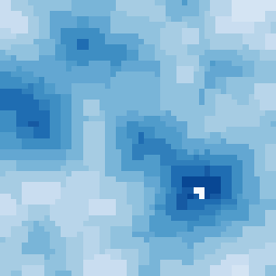
Oscillator model from Ermentrout & Edelstein-Keshet (1993). Cellular Automata Approaches to Biological Modeling. Jornal of Theoretical Biology, 160, 97-133.
Parameters
- dim: The x and y dimensions of space.
- finalTime: A number with the final time of the simulation.
Parasit
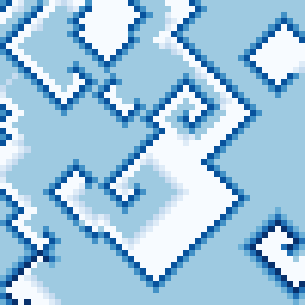
Parasit model from Hassell et al. (1991). Spatial structure and chaos in insect population dynamics. Nature, Lond. 353, 255-258.
Parameters
- dim: The x and y dimensions of space.
- finalTime: A number with the final time of the simulation.
Parity
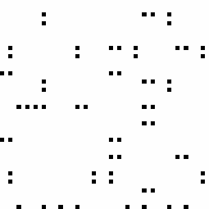
Parity model, by Nigel Gilbert. See modelingcommons.org/browse/one_model/3381.
Parameters
- dim: The x and y dimensions of space.
- finalTime: A number with the final time of the simulation.
Snow
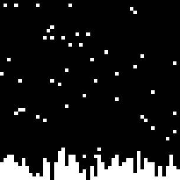
Snow falling from the sky.
Parameters
- dim: The x and y dimensions of space.
- finalTime: A number with the final time of the simulation.
- probability: The probability of a cell on the top of space to change its state to snow.
SolidDiffusion
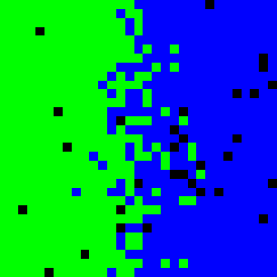
This model describes how diffusion occurs between two adjacent solids. It is based on NetLogo Solid Diffusion model http://ccl.northwestern.edu/netlogo/models/SolidDiffusion. Solid diffusion is material transport by atomic motion, this phenomena is exhaustively studied in fields as materials science, physics, biology, geology, engineering and chemistry. In this model we demonstrate that the Vacancy Diffusion Mechanism is caused by missing atoms in the metal crystal (Vacancies). These vacancies are occupied by atoms that move from areas of high concentration of Atom of type B to areas with low concentration, until the concentration is equal throughtout the sample. The first version of this implementation was developed by Yasmine and John, as final work for Environmental Modeling course in Erasmus Mundus program, Munster University, 2014. It still needs further development.
Parameters
- dim: The x and y dimensions of space.
- finalTime: The final simulation time.
Wolfram
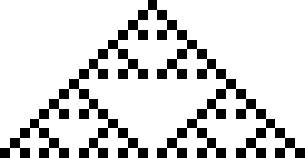
Implements Wolfram's one-dimensional Cellular Automata. For more information, see http://mathworld.wolfram.com/ElementaryCellularAutomaton.html.
Parameters
- finalTime: A number with the final time of the simulation. It also indicates the size of space needed to show all the simulation steps.
- rule: A number between 0 and 255 with the rule to be used by the automaton.